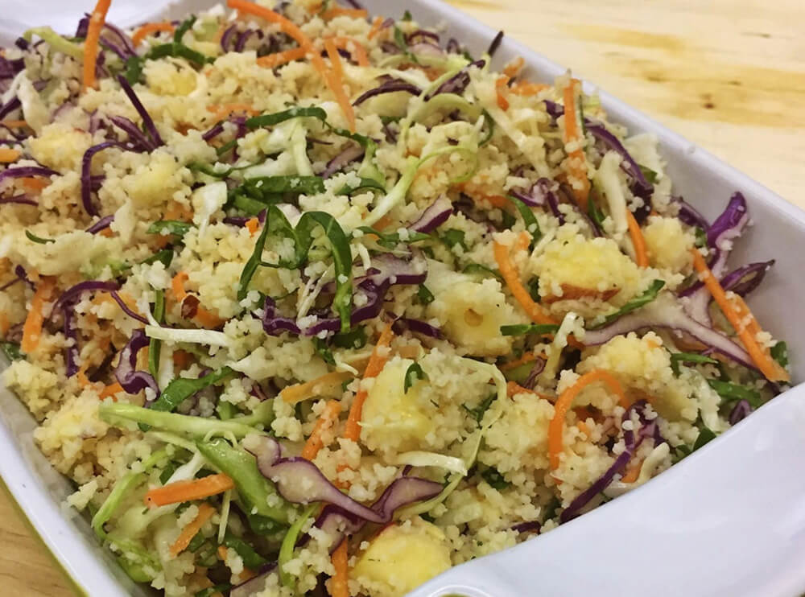

Couscous marroquino de legumes

Clique aqui para acessar a receita original
Ingredientes
- 1 xícara de chá de cenouras cortadas em cubos e cozidas;
- 1 xícara de vagem bem picadinha e cozida;
- 300g de ervilha fresca cozida;
- 1 xícara de batata cortada em cubos e cozidas;
- 2 tomates sem pele e sem sementes, cortados em cubos;
- ½ xícara de chá de azeitonas pretas picadas;
- 1 colher de sopa de suco de limão;
- Salsinha e cebolinha picada a gosto;
- 2 colheres de sopa de azeite;
- 3 colheres de sopa de cebola picada;
- 2 colheres de sopa de manteiga;
- 1 dente de alho picado;
- 2 xícaras de chá de couscous marroquino;
- 2 xícaras de chá de água.
Passos do modo de preparo
- Em uma panela, ferva a água com a manteiga e adicione um pouco de sal;
- Retire do fogo, acrescente o couscous , mexa bem e reserve por 5 min;
- Com o auxílio de um garfo, raspe o couscous para soltá-lo. Reserve;
- Em uma panela, aqueça o azeite e refogue a cebola e o alho;
- Adicione os legumes, tempere com sal e pimenta e mexa bem;
- Retire do fogo, acrescente os legumes ao couscous e misture bem;
- Acrescente as azeitonas, salsinha, cebolinha, sal e pimenta a gosto;
- Mexa muito bem, regue com o suco de limão e azeite.